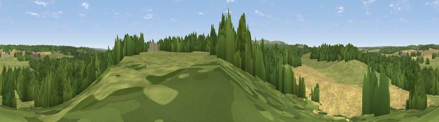

Viewpoint near Hamstead Marshall
#36439 in England · top 71% of its area beats it · near Hamstead MarshallWhere it is
The exact computed spot (SU 41275 66925). Click the marker for map links.
The view, rendered

A 360° render of this exact spot computed from the terrain model, tree cover and land cover — summer colours, afternoon light, calibrated against photographs of famous viewpoints. Real trees, hedges and buildings will differ in detail.
The panorama
Grey silhouette: terrain skyline in each direction (720 bearings, Earth curvature and refraction included). Dashed green: skyline with trees (+15 m) and buildings (+8 m) as obstacles. Blue strip: how far the ground is visible on each bearing.
Where the view opens
Wedge length = distance to the farthest visible ground on that bearing (vegetation-aware). Rings at 10, 25 and 50 km.
What fills the view
41% grassland · 33% woodland · 25% cropland
Angular shares of the visible panorama (visual magnitude), not map area. Landscape diversity 0.48 (0–1 Shannon).
Key numbers
More beautiful places nearby
The staircase of upgrades: each row has a higher view potential than everything closer. Driving times are estimates from straight-line distance, calibrated against real road routing — check an actual route before setting out.
| Place | Direction | Drive | Score |
|---|---|---|---|
| Viewpoint near Hoe Benham | N · 3 km | ~6 min | 41.0 |
| Viewpoint near Kintbury | WSW · 3 km | ~7 min | 47.1 |
| Walbury Hill | SW · 7 km | ~14 min | 70.0 |
| Gallows Down | SW · 7 km | ~14 min | 75.6 |
| Beacon Hill | SSE · 11 km | ~20 min | 76.7 |
| Martinsell viewpoint | W · 24 km | ~39 min | 77.3 |
| Viewpoint near Buriton | SSE · 56 km | ~78 min | 80.0 |
| Beacon Hill | SE · 62 km | ~85 min | 85.8 |
51.39986, -1.40807 · source: screening · position refined by local search. Computed location — check access rights before visiting.